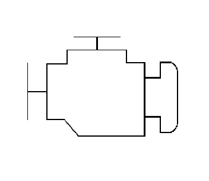
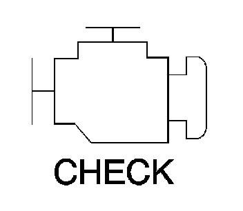

Engine Control Module: Description and Operation
ENGINE CONTROL MODULE DESCRIPTION
The powertrain has electronic controls to reduce exhaust emissions while maintaining excellent driveability and fuel economy. The engine control module (ECM) is the control center of this system. The ECM monitors numerous engine and vehicle functions. The ECM constantly monitors the information from various sensors and other inputs, and controls the systems that affect vehicle performance and emissions. The ECM also performs the diagnostic tests on various parts of the system. The ECM can recognize operational problems and alert the driver via the malfunction indicator lamp (MIL). When the ECM detects a malfunction, the ECM stores a diagnostic trouble code (DTC). The problem area is identified by the particular DTC that is set. The control module supplies a buffered voltage to various sensors and switches. Review the components and wiring diagrams in order to determine which systems are controlled by the ECM.
Malfunction Indicator Lamp (MIL) Operation
The malfunction indicator lamp (MIL) is located in the instrument panel cluster. The MIL will display as either SERVICE ENGINE SOON or one of the following symbols when commanded ON:


The MIL indicates that an emissions related fault has occurred and vehicle service is required.
The following is a list of the modes of operation for the MIL:
- The MIL illuminates when the ignition is turned ON, with the engine OFF. This is a bulb test to ensure the MIL is able to illuminate.
- The MIL turns OFF after the engine is started if a diagnostic fault is not present.
- The MIL remains illuminated after the engine is started if the control module detects a fault. A diagnostic trouble code (DTC) is stored any time the control module illuminates the MIL due to an emissions related fault. The MIL turns OFF after three consecutive ignition cycles in which a Test Passed has been reported for the diagnostic test that originally caused the MIL to illuminate.
- The MIL flashes if the control module detects a misfire condition which could damage the catalytic converter.
- When the MIL is illuminated and the engine stalls, the MIL will remain illuminated as long as the ignition is ON.
- When the MIL is not illuminated and the engine stalls, the MIL will not illuminate until the ignition is cycled OFF and then ON.